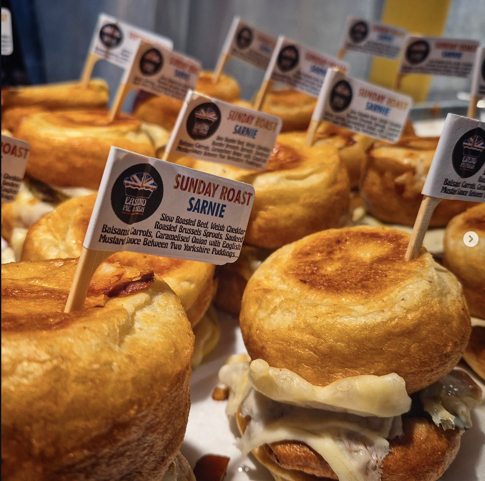
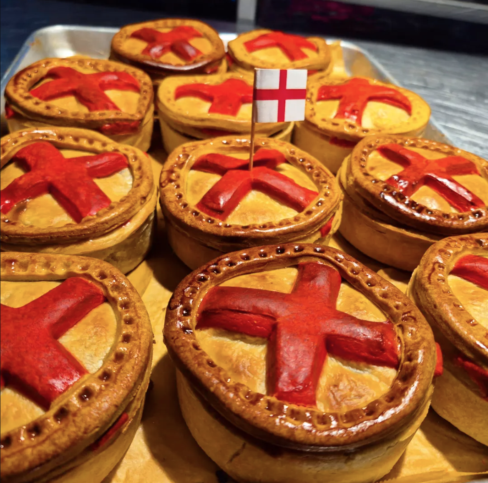
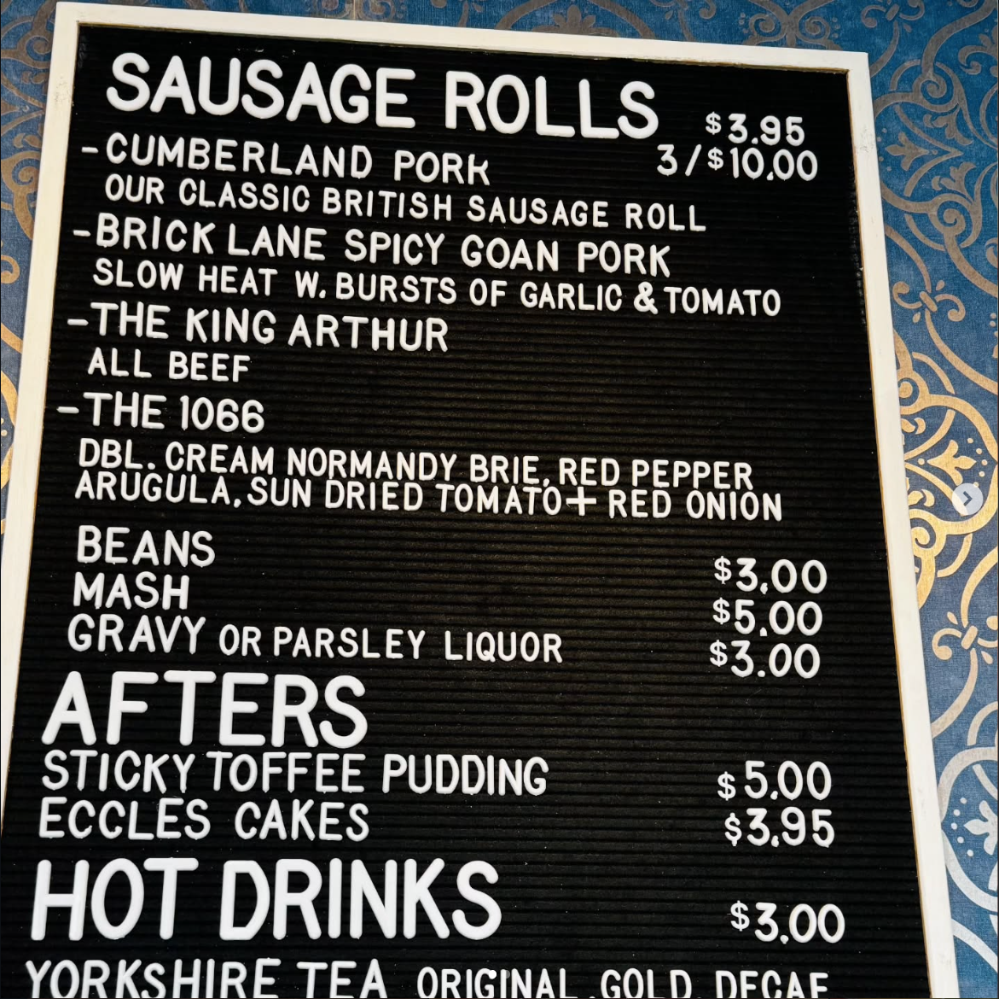
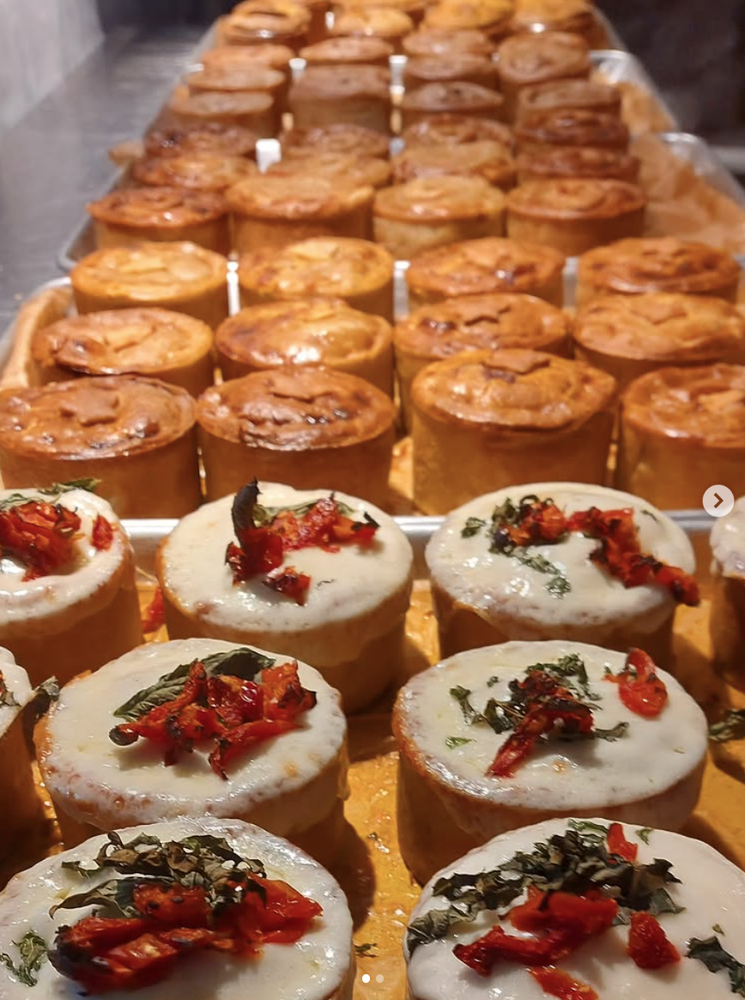

TORONTO — BY WAY OF THE EAST END
PIE. MASH. GRAVY.
A tiny pie shop doing one thing properly. Made this morning, gone by close. No nonsense.
Humble food. Extraordinary pastry. Zero fuss.
We grew up on this stuff in the East End of London — pie, a heap of mash, a ladle of gravy and no ceremony about it. We packed it into a tiny room on Gerrard Street East and left the rest of it in London.
Everything's made in the morning. When a tray's gone, it's gone — we'd rather run out of good than keep out bad. Come early. Bring your appetite and leave your airs at the door.
Six stools.
A very good oven.
A queue by noon.

All in the pastry.

Golden top, proper suet base, a filling that holds its shape when you cut it. If the pastry's wrong, none of the rest matters.

“Best pie this side of the Atlantic.”
— A BLOKE FROM BOW, PROBABLY BIASED
1031
Gerrard
St East
Toronto, Ontario. Look for the black sign — you'll smell it first.
GET DIRECTIONS →